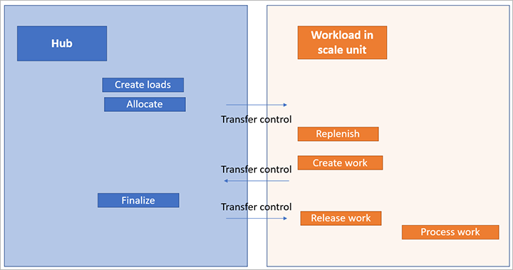
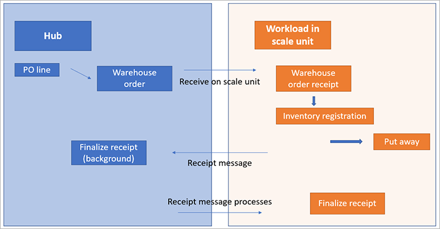

Arbeitsauslastungen der Lagerortverwaltung für Scale-Units in der Cloud und Edge
Important
Dynamics 365 for Finance and Operations hat sich zu speziell entwickelten Anwendungen entwickelt, mit denen Sie bestimmte Geschäftsfunktionen verwalten können. Weitere Informationen zu diesen Änderungen finden Sie im Dynamics 365-Lizenzierungshandbuch.
Important
Die hier aufgeführten Funktion sind alle oder teilweise im Rahmen einer Vorschauversion verfügbar. Inhalt und Funktionsweise unterliegen Änderungen. Weitere Informationen zu Vorschauversionen finden Sie in den FAQ zu Dienstupdates für One Version.
Warning
In der öffentlichen Vorschau werden nicht alle Geschäftsfunktionen vollständig unterstützt, wenn Scale-Units für die Arbeitsauslastung verwendet werden. Achten Sie darauf, nur die Prozesse zu verwenden, die in diesem Thema ausdrücklich als unterstützt beschrieben werden.
Lagerort-Ausführung auf Scale-Units
Diese Funktion ermöglicht es Scale-Units, ausgewählte Prozesse aus den Funktionalitäten der Lagerortverwaltung auszuführen. Cloud-Scale-Units führen ihre Arbeitsauslastungen in der Cloud aus, indem sie dedizierte Verarbeitungskapazität in Ihrer ausgewählten Microsoft Azure-Region nutzen. Für Edge-Scale-Units können Sie einige Arbeitsauslastungen unabhängig vor Ort ausführen, auch wenn die Scale-Units vorübergehend von der Cloud getrennt sind.
In diesem Thema werden Lagerortverwaltungs-Ausführungen in einem Lagerort, der als Scale-Unit definiert ist, als Lagerort Execution System (WES) bezeichnet.
Voraussetzungen
Sie müssen über einen Dynamics 365 Supply Chain Management-Hub und eine Scale-Unit verfügen, die mit der Arbeitsauslastung der Lagerortverwaltung bereitgestellt wurde. Weitere Informationen über die Architektur und den Bereitstellungsprozess finden Sie unter Cloud- und Edge-Scale-Einheiten für Arbeitsauslastungen in der Fertigung und Lagerortverwaltung.
Wie die WES-Arbeitsauslastung auf Scale-Units funktioniert
Für die Prozesse in der Arbeitsauslastung der Lagerortverwaltung werden die Daten zwischen dem Hub und den Scale-Units synchronisiert.
Eine Scale-Unit kann nur die Daten verwalten, deren Eigentümer sie ist. Das Dateneigentumskonzept für Scale-Units hilft, Multi-Master-Konflikte zu vermeiden. Daher ist es wichtig, dass Sie verstehen, welche Prozesse dem Hub und welche den Scale-Units gehören.
Die Scale-Units besitzen die folgenden Daten:
Wellenverarbeitungsdaten - Ausgewählte Wellenverarbeitungsmethoden werden als Teil der Wellenverarbeitung der Scale-Unit behandelt.
Arbeitsverarbeitungsdaten - Die folgenden Arten der Arbeitsauftragsverarbeitung werden unterstützt:
- Bestandsbewegungen (manuelle Bewegung und Bewegung über eine Arbeitsvorlage)
- Einkaufsbestellungen (Einlagerungsarbeiten über eine Lagerort-Bestellung)
- Verkaufsaufträge (einfache Kommissionier- und Verladearbeiten)
Lagerbestellungs-Eingangsdaten - Diese Daten werden nur für Einkaufsbestellungen verwendet, die manuell an ein Lagerort freigegeben werden.
Ladungsträgerdaten - Ladungsträger können auf dem Hub und der Scale-Unit erstellt werden. Eine dedizierte Konfliktbehandlung ist vorgesehen. Beachten Sie, dass diese Daten nicht lagerspezifisch sind.
Ausgehender Prozessablauf
Der Hub besitzt die folgenden Daten:
- Alle Quelldokumente, wie z. B. Verkaufsaufträge und Transportaufträge
- Auftragszuordnung und Ausgangslastverarbeitung
- Die Prozesse Freigabe an Lagerort, Sendungserstellung und Wellenerstellung
Die Scale-Units besitzen die eigentliche Wellenverarbeitung (z. B. Arbeitszuweisung, Wiederbeschaffung und Bedarfserstellung) nach der Freigabe der Welle. Daher können die Arbeitskräfte im Lagerort ausgehende Arbeit mithilfe einer Lager-App verarbeiten, die mit der Scale-Unit verbunden ist.

Eingehender Prozessflow
Der Hub besitzt die folgenden Daten:
- Alle Quelldokumente, wie Einkaufsbestellungen und Aufträge zur Rücklieferung
- Eingehende Ladungsverarbeitung
Note
Der Flow der eingehenden Einkaufsbestellung unterscheidet sich konzeptionell vom ausgehenden Flow, bei dem die Scale-Unit, die die Verarbeitung vornimmt, davon abhängt, ob die Bestellung an ein Lagerort freigegeben wurde.
Wenn Sie den Prozess Freigabe an Lager verwenden, werden Lagerbestellungen erstellt, und die Verantwortung für den zugehörigen Eingangsflow wird der Scale-Unit zugewiesen. Der Hub ist nicht in der Lage, eingehenden Empfang zu registrieren.
Die Arbeitskraft kann den Empfangsprozess über eine Lagerort-App ausführen, die mit der Scale-Unit verbunden ist. Die Daten werden dann von der Scale-Unit aufgezeichnet und gegen den eingehenden Lagerauftrag gemeldet. Die Erstellung und Verarbeitung der nachfolgenden Einlagerung wird ebenfalls von der Scale-Unit übernommen.
Wenn Sie nicht den Prozess Freigabe an Lager und damit auch nicht Lageraufträge verwenden, kann der Hub den Lagereingang und die Arbeitsaufträge unabhängig von Scale-Units verarbeiten.

Unterstützte Prozesse und Rollen
Nicht alle Prozesse der Lagerortverwaltung werden in einer WES-Arbeitsauslastung auf einer Scale-Unit unterstützt. Daher empfehlen wir, dass Sie Rollen zuweisen, die zu der Funktionalität passen, die jedem Benutzer zur Verfügung steht.
Um diesen Prozess zu erleichtern, ist eine Beispielrolle mit dem Namen Lagerortverwaltung auf Arbeitsauslastung in den Demodaten unter Systemadministration > Sicherheit > Sicherheitskonfiguration enthalten. Der Zweck dieser Rolle ist es, Lagerort-Managern den Zugriff auf das WES auf der Scale-Unit zu ermöglichen. Die Rolle gewährt Zugriff auf die Seiten, die im Zusammenhang mit einer Arbeitsauslastung, die auf einer Scale-Unit gehostet wird, relevant sind.
Benutzerrollen auf einer Scale-Unit werden als Teil der anfänglichen Datensynchronisation vom Hub zur Scale-Unit zugewiesen.
Um die Rollen zu ändern, die einem Benutzer zugewiesen sind, gehen Sie zu Systemadministration > Sicherheit > Benutzer zu Rollen zuweisen auf der Scale-Unit. Benutzern, die als Lagerortverwaltung nur auf Scale-Units agieren, sollte nur die Rolle Lagerort-Manager auf Arbeitsauslastung zugewiesen werden. Auf diese Weise wird sichergestellt, dass diese Benutzer nur Zugriff auf die unterstützte Funktionalität haben. Entfernen Sie alle anderen Rollen, die diesen Benutzern zugewiesen sind.
Benutzern, die als Lagerortverwalter sowohl auf dem Hub als auch auf der Scale-Unit agieren, sollte die bestehende Rolle Lagerort-Arbeiter zugewiesen werden. Beachten Sie, dass diese Rolle den Lagerkräften Zugriff auf Funktionen (z. B. Transportauftragsbearbeitung) gewährt, die in der Benutzeroberfläche (UI) erscheinen, aber derzeit nicht auf Scale-Units unterstützt werden.
Unterstützte WES-Prozesse
Die folgenden Lagerausführungsprozesse können für eine WES-Arbeitsauslastung auf einer Scale-Unit aktiviert werden:
- Ausgewählte Wellenmethoden für Verkaufsaufträge und Wiederbeschaffung von Bedarf
- Ausführen von Arbeitsaufträgen aus Verkaufsaufträgen und Wiederbeschaffung durch Verwendung der Lagerort App
- Abfrage von Lagerort-Beständen mit der Lagerort App
- Erstellen und Ausführen von Bestandsbewegungen mit Hilfe der Lagerort App
- Registrieren von Einkaufsbestellungen und Ausführen von Einlagerungsarbeiten mit der Lagerort App
Die folgenden Arbeitsauftragstypen werden derzeit für WES-Arbeitsauslastungen bei Scale-Unit-Bereitstellungen unterstützt:
- Aufträge
- Wiederbeschaffung
- Bestandsumlagerung
- Einkaufsbestellungen, die mit Lagerort-Bestellungen verknüpft sind
Keine andere Verarbeitung von Quelldokumenten wird derzeit auf Scale-Units unterstützt. Für eine WES-Arbeitsauslastung auf einer Scale-Unit können Sie z. B. die folgenden Aktionen nicht durchführen:
- Einen Transportauftrag freigeben.
- Ausgehende Lagerort-Kommissionier- und Versandvorgänge verarbeiten.
Important
Wenn Sie eine Arbeitsauslastung auf einer Scale-Unit verwenden, können Sie keine nicht unterstützten Prozesse für das spezifische Lager auf dem Hub ausführen.
Die folgenden Funktionen der Lagerortverwaltung werden derzeit auf Scale-Units nicht unterstützt:
- Eingangs- und Ausgangsbearbeitung für Elemente, die eine aktive Verfolgungsdimension haben (z. B. Chargen- oder Seriennummerndimensionen)
- Verarbeitung von Bestandsstatusänderungen
- Verarbeitung von Beständen, die einen Sperrstatuswert haben
- Integration mit dem Qualitätsmanagement
- Integration mit der Produktion
- Verarbeitung von Catch-Weight-Elementen
- Verarbeitung von Über- und Unterlieferungen
- Verarbeitung von negativem Bestand
Outbound (wird nur für Verkaufsaufträge und Wiederbeschaffung unterstützt)
Die folgende Tabelle zeigt, welche Funktionen im Outbound unterstützt werden und wo sie unterstützt werden, wenn die Arbeitsauslastungen der Lagerortverwaltung in Scale-Units und Edge-Einheiten verwendet werden.
Warning
Da nur die Verkaufsauftragsverarbeitung unterstützt wird, kann die ausgehende Lagerortverwaltung nicht für Transportaufträge verwendet werden.
Einige Lagerort-Funktionen sind in Lagern, die die Arbeitsauslastungen der Lagerortverwaltung in einer Scale-Unit ausführen, nicht verfügbar.
| Bearbeiten | Hub | WES-Arbeitsauslastung in einer Scale-Unit |
|---|---|---|
| Quellbeleg-Verarbeitung | Ja | Nr. |
| Last- und Transportverwaltungs-Verarbeitung | Ja | Nr. |
| Für Lagerort freigeben | Ja | Nr. |
| Lieferungskonsolidierung | Nr. | Nr. |
| Cross-Docking (Entnahmearbeiten) | Nr. | Nr. |
| Verarbeitung von Sendungswellen | Nein, aber die Finalisierung des Wellenstatus wird im Hub durchgeführt | Ja, aber die folgenden Funktionalitäten werden nicht unterstützt:
Hinweis: Der Zugriff auf den Hub ist erforderlich, um den Wellenstatus als Teil der Wellenverarbeitung abzuschließen. |
| Lagerort-Arbeitsverarbeitung (inkl. Ladungsträger-Druck) | Nr. | Ja, aber nur für die folgenden Funktionalitäten:
|
| Clusterkommissionierung | Nr. | Nr. |
| Packen-Verarbeitung | Nr. | Nr. |
| Ausgehende Sortierverarbeitung | Nr. | Nr. |
| Drucken von ladungsbezogenen Dokumenten | Ja | Nr. |
| Konnossement- und ASN-Generierung | Ja | Nr. |
| Versandbestätigung und Lieferscheinverarbeitung | Ja | Nr. |
| Kurzkommissionierung (Verkaufsaufträge) entnehmen | Nr. | Nr. |
| Stornierung von Arbeit | Nr. | Nr. |
| Änderung von Arbeitsplätzen (Verkaufsaufträge) | Nr. | Nr. |
| Arbeit abschließen (Arbeitsaufträge) | Nr. | Nr. |
| Arbeit sperren und entsperren | Nr. | Nr. |
| Benutzer ändern | Nr. | Nr. |
| Arbeitsbericht drucken | Nr. | Nr. |
| Serienetikett | Nr. | Nr. |
| Arbeit stornieren | Nr. | Nr. |
Zugang
Die folgende Tabelle zeigt, welche Funktionen im Eingang unterstützt werden und wo sie unterstützt werden, wenn die Arbeitsauslastungen der Lagerortverwaltung in Scale-Units und Edge-Units verwendet werden.
| Bearbeiten | Hub | WES-Arbeitsauslastung in einer Scale-Unit |
|---|---|---|
| Quelle Dokument Verarbeitung | Ja | Nr. |
| Last- und Transportverwaltungs-Verarbeitung | Ja | Nr. |
| Versandbestätigung | Ja | Nr. |
| Freigabe der Einkaufsbestellung an den Lagerort (Lagerbestandsverarbeitung) | Ja | Nr. |
| Bestellungsartikel – Empfang und Einlagerung | Ja, wenn kein Lagerort vorhanden ist keine Lagerbestellung Nein, wenn eine Lagerort-Bestellung vorhanden ist |
Ja, wenn es eine Lagerort-Bestellung gibt, und wenn eine Einkaufsbestellung nicht Teil einer Ladung ist. Es müssen jedoch zwei Menüpunkte für mobile Geräte verwendet werden, einer für den Wareneingang (Einkaufsbestellung Element Wareneingang) und ein weiterer, bei dem die Option Bestehende Arbeit verwenden aktiviert ist, um die Einlagerung zu bearbeiten. Nein, wenn es keine Lagerort-Bestellung gibt. |
| Bestellposition – Empfang und Einlagerung | Ja, wenn kein Lagerort vorhanden ist Nein, wenn eine Lagerort-Bestellung vorhanden ist |
Nr. |
| Rücklieferungsempfang und -einlagerung | Ja | Nr. |
| Empfang und Einlagerung gemischter Ladungsträger | Ja, wenn kein Lagerort vorhanden ist Nein, wenn eine Lagerort-Bestellung vorhanden ist |
Nr. |
| Artikelempfang aus Ladung | Ja, wenn kein Lagerort vorhanden ist Nein, wenn eine Lagerort-Bestellung vorhanden ist |
Nr. |
| Kennzeichenempfang und -einlagerung | Ja, wenn kein Lagerort vorhanden ist Nein, wenn eine Lagerort-Bestellung vorhanden ist |
Nr. |
| Artikelempfang und -einlagerung für Umlagerungsauftrag | Ja | Nr. |
| Umlagerungsauftragsposition – Empfang und Einlagerung | Ja | Nr. |
| Stornierung von Arbeit | Ja, wenn kein Lagerort vorhanden ist Nein, wenn eine Lagerort-Bestellung vorhanden ist |
Ja, aber die Option Bon bei Stornierung von Arbeit abmelden (auf der Seite Parameter der Lagerortverwaltung) wird nicht unterstützt. |
| Einkaufsbestellung Wareneingangsbearbeitung | Ja | Nr. |
| Cross-Docking-Arbeitserstellung als Teil des Empfangs | Ja, wenn kein Lagerort vorhanden ist Nein, wenn eine Lagerort-Bestellung vorhanden ist |
Nr. |
Lagerort-Operationen und Ausnahme-Handling
Die folgende Tabelle zeigt, welche Funktionen für Lagerort-Operationen und Exception Handing unterstützt werden und wo sie unterstützt werden, wenn die Arbeitsauslastungen der Lagerortverwaltung in Scale-Units und Edge-Units verwendet werden.
| Bearbeiten | Hub | WES-Arbeitsauslastung in einer Scale-Unit |
|---|---|---|
| Ladungsträger abfragen | Ja | Ja |
| Element abfragen | Ja | Ja |
| Lagerplatz abfragen | Ja | Ja |
| Lagerort ändern | Ja | Ja |
| Bewegung | Nr. | Ja |
| Bewegung durch Vorlage | Nr. | Ja |
| Abgleich (rein/raus) | Ja | Nr. |
| Zykluszählung und Zähldiskrepanzverarbeitung | Ja | Nr. |
| Label neu drucken (Ladungsträgerdruck) | Ja | Nr. |
| Ladungsträgererstellung | Ja | Nr. |
| Ladungsträgerauflösung | Ja | Nr. |
| Einchecken durch Fahrer | Ja | Nr. |
| Auschecken durch Fahrer | Ja | Nr. |
| Chargendisposition-Code ändern | Ja | Nr. |
| Offene Arbeitsliste anzeigen | Ja | Nr. |
| Kennzeichen konsolidieren | Nr. | Nr. |
| Container aus Gruppe entfernen | Nr. | Nr. |
| Arbeit stornieren | Nr. | Nr. |
| Min/Max-Wiederbeschaffung | Nr. | Nr. |
| Zuteilung von Zeitfenstern-Wiederbeschaffung | Nr. | Nr. |
Produktion
Die Integration der Lagerortverwaltung für Produktionsszenarien wird derzeit nicht unterstützt, wie in der folgenden Tabelle angegeben.
| Bearbeiten | Hub | WES-Arbeitsauslastung in einer Scale-Unit |
|---|---|---|
Alle Lagerortverwaltungsprozesse, die mit der Produktion zusammenhängen. Im Folgenden finden Sie einige Beispiele hierfür: |
Nr. | Nr. |
Pflege von Scale-Units für WES
Sowohl auf der Hub- als auch auf der Scale-Unit laufen mehrere Batch-Jobs.
Auf der Hub-Bereitstellung können Sie die Batch-Jobs manuell pflegen. Sie können die folgenden drei Jobs unter Lagerortverwaltung > Periodische Aufgaben > Back-Office-Arbeitsauslastung verwalten:
- Arbeitsstatus-Aktualisierungsereignisse verarbeiten
- Übertragungsereignisse für die Zyklusausführungssteuerung verarbeiten
- Quellauftragszugänge registrieren
Bei der Arbeitsauslastung in Scale-Units können Sie die folgenden zwei Batch-Jobs unter Lagerortverwaltung > Periodische Aufgaben > Arbeitsauslastungsverwaltung verwalten:
- Verarbeiten von Wellentabellen-Sätzen
- Übertragungsereignisse für die Zyklusausführungssteuerung verarbeiten